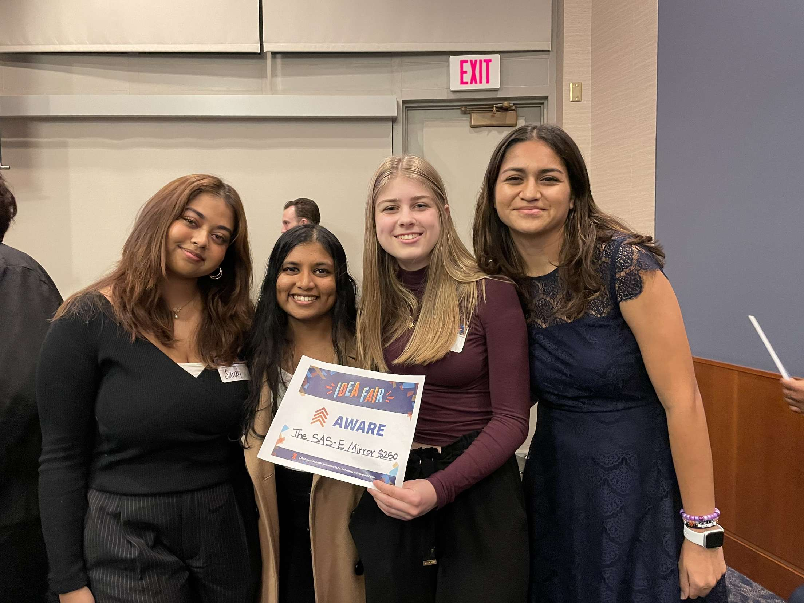

here are all the projects i've worked on, finished or not!
Current Focus:
Now
As the fall semester begins, I am looking to join projects with other students on campus.
1. Joining "Project Code" RSO's "Discord Wikis" project team. The goal is to create a website that extracts, analyzes, and organizes Discord conversations into a searchable,
indexable website using NLP techniques like sentiment analysis, topic modeling, and named entity recognition. Super cool to actual apply the intersection of my major, CS + Linguistics!
2. Joining "Society of Women Engineers" "Team Tech" project group. Each year Team Tech partners with a company and builds real, useful technology to share with them. Really exciting to work
in industry and in a team with all women.
Hammock Finder Website
Summer 2024
I am currently working on this site, based on an idea I got from a
reddit post.
My primary motivation for finishing the site is actually to reply to the thread with the finished product, and hopefully have some people try it out!
I found that reddit post because I was looking for hammock spots on campus, and so I would definitely be one to use the finder myself.
My current gameplan is to source tree location data from the
UIUC tree database, filtering for trees that have a
DBH (diameter at breast height) >6 inches, and filtering out stumps. Then, use JS find and save the coordinates of the trees that
are 10-20 feet apart, and load the coordinates into the map. Finally, display the map coordinates, with directions to get there.
If I were to then add more features, I'd look into automatically updating the website with data every few days, adding backend to
allow users to rate, review, add, tag, and favorite hammock spots, and factor in sun angles to determine if spots are
shady or not. Definitely a work in progress that can go many different directions.
I created this web game this summer as I was completing a free online JavaScript class (highly recommend, great course). The class walked us through a rock-paper-scissors web game, and it made me
want to create a more complex game on my own to practice the new language. I was also inspired largely from a blackjack program I made for fun in high school,
which was written in Java. My goal with this project was to transfer the logic from that program to HTML + CSS + JavaScript. I also focused a lot on
intuitive user-functionality, thinking about the clearest and simplest approach for the player in each step of the game. UI elements like the playing
cards were also made by me, from online drawing applications.
DialStyle App
Spring 2024
This app aimed to send contacts automatic custom responses to missed calls. It was created in Swift by a group of 4, as a part of UIUC's Women in Computer Science
club's Dev Ada program, a semester-long project cycle which gave teams freedom to create any software project to be presented in front of peers and professors at the
end of the year. I had the primary responsibility of importing contacts from the user's phone into the app, along with brainstorming features and outlining the UI
of the app.
At the time of presentation, we built a solid prototype that could load in contacts, assign custom messages to specific contacts, and favorite people.
If we were to move DialStyle forward further, I can see us implementing features like location-based messages, widget access, and google/apple calendar
integration. Ultimately, this was the project that taught me the most about
coding as a group, having to deal with merge conflicts and allocating work that comes together to a final product. It paid off when DialStyle was voted
"Audience Choice" at the final presentation!
⬆ Walk-through of the contacts view of the app prototype
SAS-E Mirror (Aware Prize)
Fall 2023
This project began in my Introduction to Innovation class, in a group of 4. We presented our business plan to judges at the 2023 UIUC Innovation Fair, and won the Aware prize,
awarding us $250 to advance our idea. I personally led the wireframing of the mirror's UI and brainstorming of the technical implementation of the product.
The SAS-E mirror
is a mirror that scans barcodes of clothing items, then uses augmented reality to display them on the person looking
in the mirror. The mirror can also use computer vision to scan a person's measurements and suggest the proper clothing size for that item.
The ultimate mission of the
SAS-E mirror is to bring customers back into brick-and-mortar stores, by reducing wait times for dressing rooms and making the physical shopping experience much more
seamless. It utilizes a business-to-business plan, in which we would sell directly to stores. While we never made a working version of the SAS-E mirror, I
learned a lot about creating a startup, gaining funding, and presenting ideas in a professional setting.

Hestia Informational Site
Summer 2023
I created this website in a group of 4, with the goal of creating a hub of information and support for those seeking reproductive care. It was also made as we were learning basic web
development with HTML, CSS, and JS. The site has a page for resources, one for support and community, and an about page. It utilizes interactive features like parallax scrolling
and accordion menus, along with flexbox-based UI. I personally chose the name Hestia from the Greek goddess of the hearth, a fireplace and the center of a home. I felt it
matched the aim of the site, to provide comfort and a symbolic home to anyone who clicked onto it.
Arduino Automatic Cello Tuner
2019
I made this project in 8th grade, but I think it's a cool first computer project!
It's an automatic cello tuner, which hijacked an electronic tuner's LED output power, rewiring it
to inform my arduino. The electronic tuner would light up one LED if the note was sharp, and
the other if it was flat, so by rewiring the current my program knew which way to turn the
cello pegs. These pegs were connected to a gear system I made out of LEGOs, powered by
a LEGO motor. The program was written in ardiuno's unique language in their IDE, and
was one of the first programs I ever wrote! The final product is a cello that tunes
itelf as you play a note.